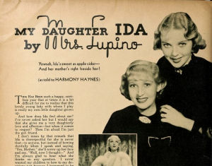

This 1936 article offers a fascinating glimpse into Ida Lupino when she was still at a very early stage of her life and career. This article purportedly contains the words of her mother, Connie Lupino, filtered through a writer for the film magazine, Hollywood.
It was published in the February 1936 issue, and likely written around December 1935, a couple months before Ida's eighteenth birthday. At this point, Ida had already been in Hollywood for over two years, and had been a film star for over three, including a year in her native England.
My Daughter Ida
By Mrs. Lupino
Yowsah, Ida's sweet as apple cider—And her mother's right beside her!
(As told to HARMONY HAYNES)
Hollywood, Feb. 1936
This has been such a happy, carefree year that at times it is a bit difficult for me to realize that this lovely young lady with whom I play is really my own little daughter grown up.
And how does Ida feel about me? I've never asked her but I would say that she gives me a very daughterly love and affection—but when it comes to respect? Then I'm afraid I'm just the girl friend.
I don't mean by that remark that Ida is disrespectful for she is never that—to anyone, but instead of bowing dutifully when I speak and saying, "Yes, Mother," she'll screw up her face and say, "Well, now I thought—". And I'm always glad to hear what she thinks on any question. I never wanted my children to bow to my decisions just because I happened to be their mother.
Ida's father, Stanley Lupino, and I were mere kids when we married. He was rapidly becoming a great favorite as a dancer and comedian on the English stage and I played as his soubrette. We had been married two and one-half years and come from the provinces to London, when Ida was born.
We felt that his future on the London stage was secure enough so that we could safely take a house and I could devote my time to mother him and the baby. However, I returned to the stage many times at the request of producers, but managed to be at home enough to superintend the rearing of Ida and Rita, who was three years younger.
• We had no careers mapped out for our children but felt that they would just naturally turn to the stage the minute they were old enough to talk and walk.
However, Ida disappointed us. She didn't seem to care much about the profession nor show any marked talent for it. At school she was a very apt pupil, never satisfied with anything but the highest marks. She was very good at painting and sketching and couldn't get enough of it. She studied everything she could about acting and about the theatre in general, reading plays, reading histories of the stage, biographies of players. With equal enthusiasm she studied music and dancing.
• She felt that the motion picture was fast robbing the stage of its time-honored place and through her cousin, Lupino Lane, obtained extra work at the British International Studios. Not long after that, she discovered that Allan Dwan, an American director, was testing girls for a small part in a picture he was to direct, called Her First Affair.
Ida was very anxious to work in the picture, to be on the set and to learn all she could from this American man. She applied for a test and met Mr. Dwan. He passed her up for the part she applied for and gave her the lead—a grown-up lead and she was but thirteen-and-a-half!
Perhaps because her father had never permitted her to play child parts, perhaps because she had always associated with grown-ups, or perhaps because Mr. Dwan was a very splendid director, she made good in that first picture and from then on played leads.
• Once, it seemed that her career must be halted—forever. Ida was run over by an automobile. She was hurled high into the air and crashed down upon a gravel walk. Her sweet little face was literally torn to shreds. Those were pitifully anxious months waiting for the bandages to be removed—and when they were removed—scars—horrid scars! However, the doctor told us that in time they would diminish. They have—you can scarcely see them now, but at the time it was hard for us to believe.
Ida, however, did not share our pessimism. She had read of a like accident befalling Carole Lombard. She had seen Carole on the screen and thought her the most beautiful woman in the world. If she could suffer such injury and still be so perfect to the camera eye, Ida felt she had nothing to worry about.
She was right—and to this day, Ida almost worships the beauty of Carole Lombard. There are certain angles in pictures, where Ida resembles Carole, and I notice that those are always the pictures she drags out to show people. If anyone notices the resemblance, Ida is happy for days, feeling that they are "sisters under the scars".
• There was much excitement at our house when Ida was invited to come to America to make a test for Alice in Wonderland. We understood it was to be a great picture and that the girl fortunate enough to play in it would be, as the Americans say, set for life.
It was Ida's big chance, we were all agreed on that, but wasn't she too young to go to a strange country all alone? I had been to America, I knew the ropes, so to speak, but if I went with her, my husband and I would be separated for the first time in our married lives. Then there was Rita who certainly was at the age when she most needed her mother. Ida would have to go alone.
"All right," Ida said, "I don't know a thing about the country, nor the people, nor the money, and I've heard Hollywood is a dangerous place, but I'll go alone. It'll be better than breaking up the family."
She said it as bravely as a sixteen-year-old could say anything, but we couldn't help but feel the trembling in her heart. Our decision was reached, I was to accompany her and Rita was to stay with her father.
I didn't know just how long I would be gone but I determined that for Ida's sake, I would make it a lovely holiday. Ida, of course, would have to work hard, but she must have a good time, too, so that if nothing came of the venture, we could go home with happy memories.
• When Ida was tested for the role of Alice, it was found that she didn't photograph childish enough. However, she was placed under a long-term contract and so began her American career.
She is very nervous and easily discouraged when she is starting a picture, but once the picture is under way she is sure of herself and everything goes along smoothly.
She liked Hollywood and its people—she became a little "Yankee" overnight, bringing home to me bits of American slang and American phrases. Americans like her, too, and took her up professionally as well as socially. They were equally as kind to me—scarcely an invitation comes to Ida that does not include me, and usually, I accept, because this is my holiday.
• When Ida is on a picture, we lead very quiet lives, reading, writing letters, listening to the radio—anything and everything but knit and we've threatened to take that up soon. Ida studies a great deal—it is her ambition to be a very well informed person. No matter what subject comes up during the day, if it is foreign to Ida, you may be sure she'll be surrounded with a flock of books that evening doing research work.
She always says, "I never want to have to sit in a corner and keep quiet just because I don't know what people are talking about." It has always been her theory, and I think a good one, that anything she takes the trouble to look up will remain a permanent part of her education.
Since I came to America solely in the interests of Ida's career, she insisted that she take care of all financial obligations. She has done so in a manner that makes me very proud of her.
We have always had a home, so she wanted one in Hollywood. It was not sensible to buy a home at first so we rented a furnished house. Ida was not pleased with the way it was furnished but rather than put a lot of money into furniture, she merely had the old upholstered pieces covered with brightly colored glazed chints.
She employs a cook, a driver and a maid. She thought at first that she could do without the driver but driving makes her very nervous.
At times when I think she is being a bit extravagant, I quietly talk things over with her, and we cut down on bills. Outside of spending money on others, Ida is not extravagant. She has quite simple tastes. She doesn't care for clothes, especially fluffy, girlish things. Her street clothes and party clothes are always neat and conservative. Her home clothes consist of pajamas or slacks. She does like shoes and can never seem to buy enough of these lovely American styles.
She doesn't like beauty parlors—they make her very nervous. On the set her maid does her hair and at home, she likes to do it herself. It really takes very little "doing" since she never looks sweeter than when it is combed back of her ears and a little ribbon tied on the top of her head.
A few months ago, we went to London for a visit. Our first trip home after coming to American in 1933. Rita was just beginning to grow into a tall shy girl. Ida felt that Rita was developing an inferiority complex from having a father busy on the stage and in pictures and from having a mother and sister in Hollywood. She insisted on bringing Rita to Hollywood with her and ridding her of her self-consciousness.
Rita has had the time of her young life permitting Ida to play guardian. Rita has dancing lessons, tennis lessons, riding lessons and skating lessons. Since Ida wanted the responsibility, I do not interfere with the "lessons".
• When it comes to love affairs, Ida is a lover of love. She comes by it naturally. Stanley was the one love of my life and I have never gotten beyond the lover stage. The nearest to a cross word Stanley has ever spoken to me is to boyishly say, "Three women in the house and I'm out of shaving cream!"
So when Ida fancies herself in love, which she does quite often, she takes it seriously for a while. Then it doesn't go as smoothly as she feels that it should, and she comes to me heart-broken. I let her wait about it for a while because I know that young girls must enjoy their "heartache" a little bit. If she doesn't snap out of it then, all I have to do is to accuse her of being dramatic. Then the funny side of it appeals to her sense of humor and she is able to laugh at herself. And I know that when the right man comes along, it will be all laughter—no tears.
Stanley has just arrived in Hollywood for a visit. When he must return to England, I am going with him and taking Rita. I shall be very happy to be home once more but it will be a long, long time before I forget my wonderful Hollywood holiday with my daughter-friend, Ida Lupino.
Post-script: Connie Lupino did not, in fact, return to England with Stanley in early 1936. She stayed in Hollywood with her daughters.
Here is the article in its original layout in Hollywood magazine. Click the images to get a full-size, more readable, image.